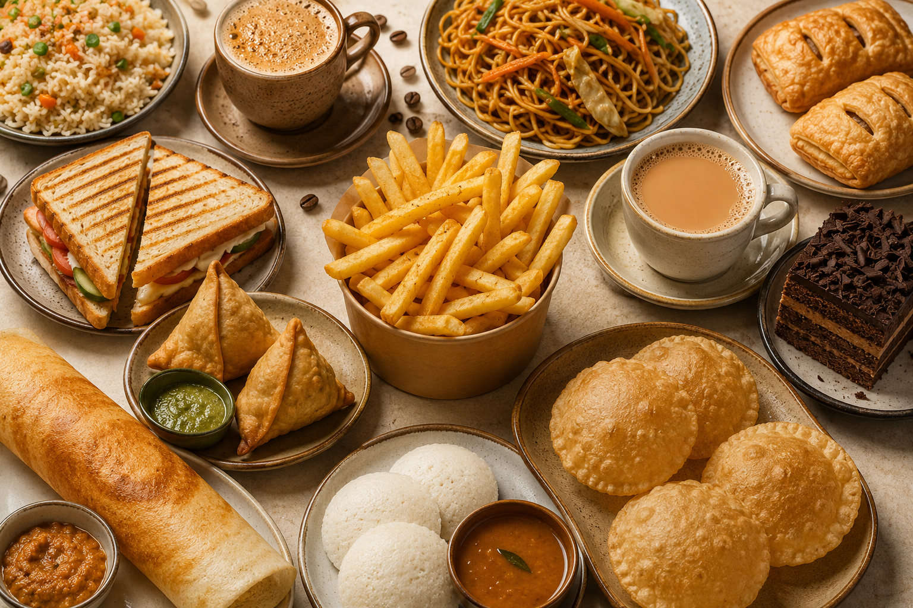
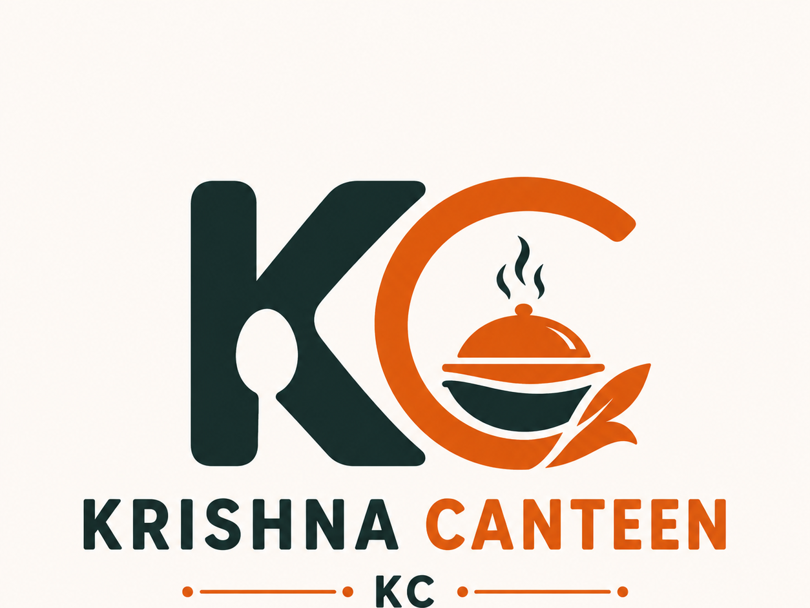
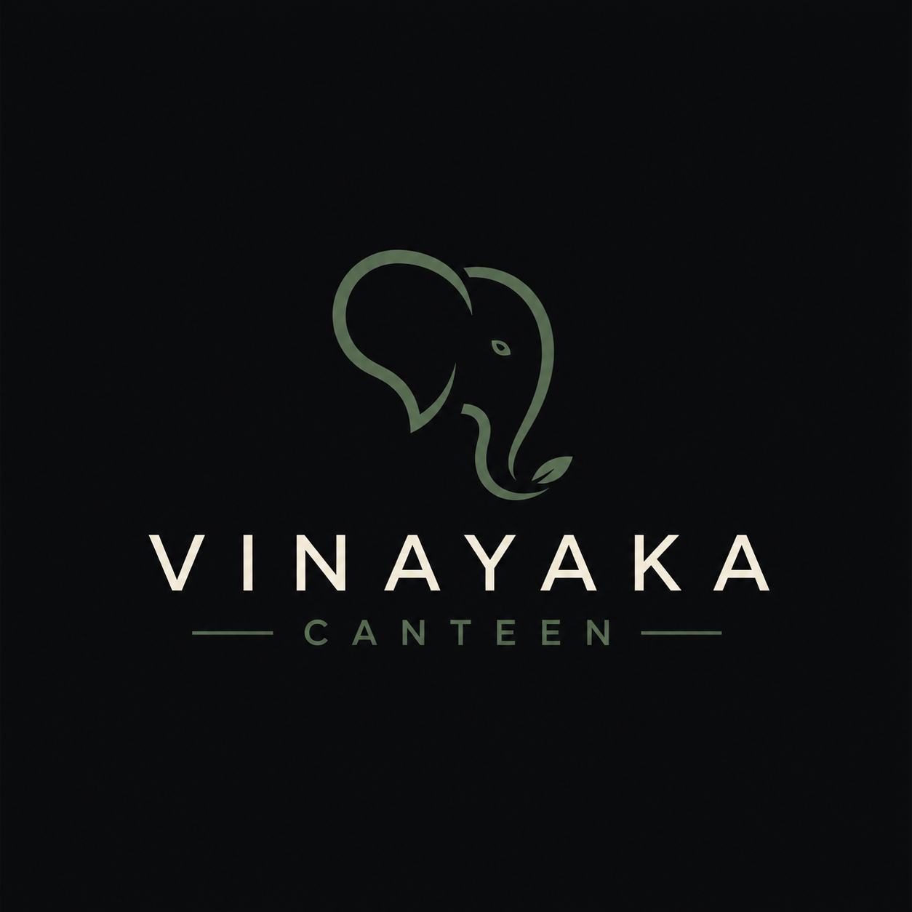

Krishna Canteen (KC)
The campus favourite for everyday meals and snacks.
- Open Now
- Average wait: 8-10 mins
Order ahead from your favourite SASTRA canteens and collect using a digital token.
Explore Canteens

The campus favourite for everyday meals and snacks.
Perfect for breakfast, dosas and refreshments.
Coffee, cakes and evening cravings.

Fresh meals and hot snacks throughout the day.
Avoid long waiting lines by ordering before reaching the canteen.
Receive an instant token after placing your order.
Browse menus from all major SASTRA campus canteens.
Quickly find your favourite meals with instant search and category filters.